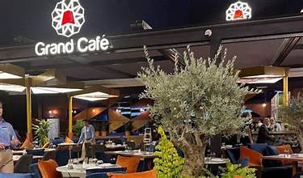

سحر الجزر اليونانية على شواطئ لوران
بدأ جراند كافيه كمكان راقي على الكورنيش، ومع شهرته خصص ركناً لبيع الهدايا التذكارية الراقية اللي بتعبر عن هوية وروح مدينة الإسكندرية.
المكان ارتبط في ذاكرة السكندريين بالمناسبات السعيدة، وقسم الهدايا فيه بيقدم قطع فنية ومنتجات فاخرة بتعتبر تذكاراً قيماً جداً لزوار المدينة.
عودة للصفحة الرئيسية